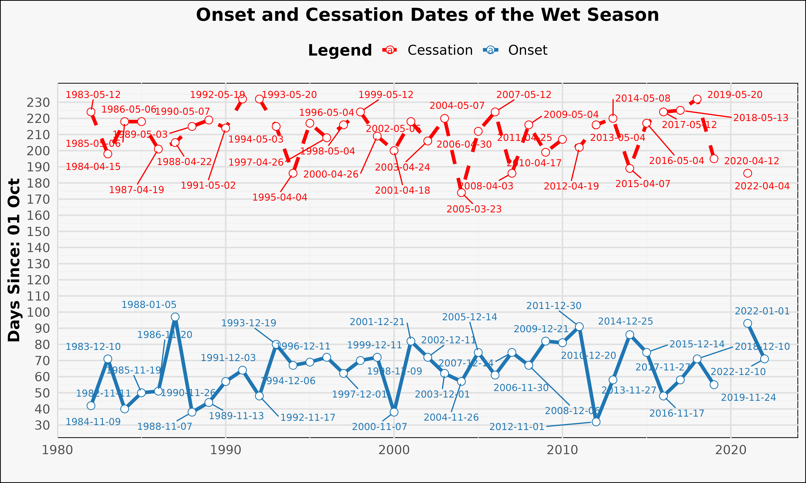

Estimation and Prediction of the Wet Season Calendar (WSC) Using a Daily Soil Water Balance Model for Agricultural Applications Using AquaBEHER
Robel Takele and Matteo Dell’Acqua
2024-09-21
Source:vignettes/AquaBEHER.Rmd
AquaBEHER.Rmd
1. Introduction
Welcome to the tutorial for AquaBEHER, an R package designed to estimate and predict the wet season calendar and soil water balance for agricultural applications. This vignette provides a practical guide to using AquaBEHER. The package integrates daily potential evapotranspiration (PET) and soil water balance parameters to compute the wet season calendar (WSC) for crop and soil water management. Using these parameters, AquaBEHER can estimate and predict the onset, cessation, and duration of the wet season based on an agroclimatic approach.
In this tutorial, you will learn how to:
- Install and set up AquaBEHER.
- Estimate potential evapotranspiration (PET) using different methods.
- Calculate daily soil water balance.
- Estimate the wet season calendar using an agroclimatic approach.
2. Installation and Loading
To install the latest development version of AquaBEHER, use devtools. Ensure that Rtools is installed on Windows for full functionality.
## Install required packages:
# if (!require("pacman")) install.packages("pacman")
# pacman::p_load(knitr, rmarkdown, prettydoc, dplyr, ggplot2, lubridate,
# terra, devtools, ggrepel, zoo)
## Install AquaBEHER from CRAN:
# install.packages("AquaBEHER")
## Install AquaBEHER from GitHub:
# devtools::install_github("RobelTakele/AquaBEHER")
library(AquaBEHER)
library(ggplot2)
library(ggrepel)
library(dplyr)3. Required Climate Data
For evapotranspiration calculations, various meteorological and geographical parameters are needed, as shown below:
Meteorological Data:
- Maximum and minimum temperature
- Solar radiation
- Dew point temperature
- Wind speed
- Rainfall
Geographical Data:
- Latitude
- Longitude
- Elevation
data(AgroClimateData)
str(AgroClimateData)
#> 'data.frame': 14975 obs. of 14 variables:
#> $ GridID: chr "MOZ0007149" "MOZ0007149" "MOZ0007149" "MOZ0007149" ...
#> $ Lat : num -15.1 -15.1 -15.1 -15.1 -15.1 ...
#> $ Lon : num 39.3 39.3 39.3 39.3 39.3 ...
#> $ Elev : num 392 392 392 392 392 ...
#> $ WHC : num 97.8 97.8 97.8 97.8 97.8 ...
#> $ Year : num 1982 1982 1982 1982 1982 ...
#> $ Month : num 1 1 1 1 1 1 1 1 1 1 ...
#> $ Day : num 1 2 3 4 5 6 7 8 9 10 ...
#> $ Rain : num 0 0 0 1.91 0 ...
#> $ Tmax : num 32.2 33.1 33.5 32.8 32.7 ...
#> $ Tmin : num 23.1 23.1 23.1 23.6 22.8 ...
#> $ Rs : num 23.9 26.4 25 24.2 23.4 ...
#> $ Tdew : num 20.2 20.5 20.5 20.8 21.4 ...
#> $ Uz : num 4.72 4.28 3.62 2.54 1.48 ...
head(AgroClimateData)
#> GridID Lat Lon Elev WHC Year Month Day Rain
#> 1 MOZ0007149 -15.09238 39.2519 392.1337 97.84914 1982 1 1 0.000000
#> 2 MOZ0007149 -15.09238 39.2519 392.1337 97.84914 1982 1 2 0.000000
#> 3 MOZ0007149 -15.09238 39.2519 392.1337 97.84914 1982 1 3 0.000000
#> 4 MOZ0007149 -15.09238 39.2519 392.1337 97.84914 1982 1 4 1.907393
#> 5 MOZ0007149 -15.09238 39.2519 392.1337 97.84914 1982 1 5 0.000000
#> 6 MOZ0007149 -15.09238 39.2519 392.1337 97.84914 1982 1 6 0.000000
#> Tmax Tmin Rs Tdew Uz
#> 1 32.24396 23.11500 23.86698 20.21160 4.723783
#> 2 33.07202 23.12585 26.38375 20.48284 4.279407
#> 3 33.49679 23.12602 25.00704 20.45689 3.622179
#> 4 32.76818 23.60351 24.16475 20.83896 2.535047
#> 5 32.65872 22.79294 23.44483 21.36882 1.477617
#> 6 31.80630 22.43975 21.99277 21.29297 1.9534154. Potential Evapotranspiration
Potential evapotranspiration (PET) is vital for agricultural water management. AquaBEHER offers multiple methods to estimate PET, including the FAO Penman-Monteith, Priestley-Taylor, and Hargreaves-Samani formulations.

Usage:
PET <- calcEto(AgroClimateData, method = “PM”, crop =
“short”)
str(PET)
- The function return a list of
- daily estimations of PET in (mm/day)
- daily estimations of extraterrestrial radiation (MJ/m2/day)
- daily estimations of slope of vapor pressure curve (kPa/°C)
Example:
The calcEto function computes PET with inputs of a data frame containing daily values of meteorological parameters:
PET <- calcEto(AgroClimateData, method = "PM", crop = "short")
str(PET)
#> List of 7
#> $ ET.Daily : num(0)
#> $ Ra.Daily : num [1:14975] 40.9 40.9 40.9 40.9 40.9 ...
#> $ Slope.Daily : num [1:14975] 0.217 0.221 0.224 0.222 0.217 ...
#> $ Ea.Daily : num [1:14975] 2.37 2.41 2.41 2.46 2.54 ...
#> $ Es.Daily : num [1:14975] 3.82 3.94 4 3.94 3.85 ...
#> $ ET.formulation: chr "Penman-Monteith FAO56"
#> $ ET.type : chr "Reference Crop ET"
#> - attr(*, "class")= chr "PEToutList"Graphical comparison of the evapotranspiration (mm/day) calculated using the FAO Penman–Monteith formulation and the Hargreaves-Samani formulation:
## Compute PET using Hargreaves-Samani formulation using the sample data f
## rom 'AgroClimateData':
Eto.HS <- calcEto(AgroClimateData, method = "HS")
## Now compute PET using Penman-Monteith formulation:
Eto.PM <- calcEto(AgroClimateData, method = "PM", Zh = 10)
plot(Eto.PM$ET.Daily[1:1000],
type = "l", xlab = "Days since 1996",
ylab = "Eto (mm/day)", col = "black", lwd = 1, lty = 2
)
lines(Eto.HS$ET.Daily[1:1000], col = "blue", lwd = 2, lty = 1)
legend("bottom", c("Eto: Penman–Monteith", "Eto: Hargreaves-Samani"),
horiz = TRUE, bty = "n", cex = 1, lty = c(2, 1),
lwd = c(2, 2), inset = c(1, 1),
xpd = TRUE, col = c("black", "blue")
)Key Insight: The FAO Penman–Monteith formulation presents enhanced day-to-day variations of evapotranspiration compared to the Hargreaves-Samani formulation.
5. Soil Water Balance
This function performs daily computations of soil water balance parameters for the root zone. Soil water changes daily in response to rainfall, evapotranspiration, runoff and deep drainage.
Assumptions
- Atmospheric conditions affect the rate at which crops use water.
- The soil has uniform cross-section of homogeneous volume with a measured depth and a unit area.
- A well-established, dense grass crop is growing, which completely covers the soil surface.
Example:
The calcWatBal compute with inputs of data frame containing daily values of Rain, Eto and soil water holding capacity.
PET <- calcEto(AgroClimateData, method = "PM", Zh = 10)
## Add the estimated PET 'ET.Daily' to a new column in AgroClimateData:
AgroClimateData$Eto <- PET$ET.Daily
## Estimate daily water balance for the soil having 100mm of soilWHC:
soilWHC <- 100
watBal.list <- calcWatBal(data = AgroClimateData, soilWHC)
watBal <- watBal.list$data
str(watBal)
#> 'data.frame': 14975 obs. of 20 variables:
#> $ GridID: chr "MOZ0007149" "MOZ0007149" "MOZ0007149" "MOZ0007149" ...
#> $ Lat : num -15.1 -15.1 -15.1 -15.1 -15.1 ...
#> $ Lon : num 39.3 39.3 39.3 39.3 39.3 ...
#> $ Elev : num 392 392 392 392 392 ...
#> $ WHC : num 97.8 97.8 97.8 97.8 97.8 ...
#> $ Year : num 1982 1982 1982 1982 1982 ...
#> $ Month : num 1 1 1 1 1 1 1 1 1 1 ...
#> $ Day : num 1 2 3 4 5 6 7 8 9 10 ...
#> $ Rain : num 0 0 0 0 0 ...
#> $ Tmax : num 32.2 33.1 33.5 32.8 32.7 ...
#> $ Tmin : num 23.1 23.1 23.1 23.6 22.8 ...
#> $ Rs : num 23.9 26.4 25 24.2 23.4 ...
#> $ Tdew : num 20.2 20.5 20.5 20.8 21.4 ...
#> $ Uz : num 4.72 4.28 3.62 2.54 1.48 ...
#> $ Eto : num 6.45 6.8 6.49 5.84 5.23 ...
#> $ R : num 0 0 0 0 0 0 0 0 0.656 1 ...
#> $ AVAIL : num 0 0 0 0 0 ...
#> $ TRAN : num 0 0 0 0 0 ...
#> $ DRAIN : num 0 0 0 0 0 0 0 0 0 0 ...
#> $ RUNOFF: num 0 0 0 0 0 ...
## Filter the data for the years 2019 and 2020:
watBal.19T20 <- watBal[watBal$Year %in% c(2019, 2020), ]
## Create a date vector:
date.vec <- as.Date(paste0(
watBal.19T20$Year, "-",
watBal.19T20$Month, "-",
watBal.19T20$Day
), format = "%Y-%m-%d")
## Add the date vector to the data frame:
watBal.19T20$date <- date.vec
## Plotting the water balance output for the climatological year
## from 2019 to 2020 using ggplot2:
library(ggplot2)
library(scales)
ggplot(data = watBal.19T20, aes(x = date)) +
geom_bar(aes(y = Rain),
stat = "identity", fill = "#1f78b4",
alpha = 0.6, width = 0.8
) +
geom_line(aes(y = AVAIL), color = "#33a02c", size = 1.5) +
geom_line(aes(y = Eto),
color = "#ff7f00", size = 1.2,
linetype = "dashed"
) +
scale_x_date(
date_labels = "%b %Y", date_breaks = "1 month",
expand = c(0.01, 0)
) +
scale_y_continuous(
name = "Available Soil Water (mm)",
sec.axis = sec_axis(~., name = "Rainfall (mm)")
) +
labs(
title = "Rainfall, Available Soil Water and
Potential Evapotranspiration",
subtitle = "Data from 2019 to 2020",
x = " ",
y = " "
) +
theme_minimal(base_size = 15) +
theme(
plot.title = element_text(face = "bold", size = 18, hjust = 0.5),
plot.subtitle = element_text(size = 14, hjust = 0.5, color = "grey40"),
axis.title.y = element_text(color = "#33a02c"),
axis.title.y.right = element_text(color = "#1f78b4"),
axis.text.x = element_text(angle = 45, hjust = 1),
panel.grid.minor = element_blank(),
panel.grid.major = element_line(linetype = "dotted", color = "grey80")
)6. Rainy Season Calendar
The onset and cessation dates of the wet season were determined for
each climatological year Figure 1. The term climatological
year represents the period between two driest periods, which is
traditionally defined based on a calendar year starting from the driest
month and has a fixed length of 12 months.

Various methods have been developed to estimate the wet season calendar, i.e. the onset, cessation and duration of the wet season. Common method used for crop production applications is the agroclimatic approach. As per agroclimatic approach, a normal wet season (growing season) is defined as one when there is an excess of precipitation over potential evapotranspiration (PET). Such a period meets the evapotranspiration demands of crops and recharge the moisture of the soil profile (FAO 1977; 1978; 1986). Thus, the wet season calendar defined accordingly:
Onset
The onset of the wet season will start on the first day after
onsetWind.start, when the actual-to-potential
evapotranspiration ratio is greater than 0.5 for 7 consecutive days,
followed by a 20-day period in which plant available water remains above
wilting over the root zone of the soil layer.
Cessation
The wet season will end, cessation, on the first day after
onsetWind.end, when the actual-to-potential
evapotranspiration ratio is less than 0.5 for 7 consecutive days,
followed by 12 consecutive non-growing days in which plant available
water remains below wilting over the root zone of the soil layer.
Duration
The duration of the wet season is the total number of days from onset to cessation of the season.

Example:
Using the sample climate data provided by the AquaBEHER package, compute the wet season calendar:
## The wet season calendar is estimated for the onset window ranges from
## 01-September to 31-January having a soil with 80mm of soilWHC:
data(AgroClimateData)
PET <- calcEto(AgroClimateData, method = "HS")
AgroClimateData$Eto <- PET$ET.Daily
soilWHC <- 80
watBal.list <- calcWatBal(data = AgroClimateData, soilWHC)
watBal <- watBal.list$data
onsetWind.start <- "10-01" ## earliest possible start date of the onset window
onsetWind.end <- "01-31" ## the latest possible date for end of the onset window
cessaWind.end <- "06-30" ## the latest possible date for end of the cessation window
seasCal.dF <- calcSeasCal(
data = watBal, onsetWind.start,
onsetWind.end, cessaWind.end, soilWHC
)
str(seasCal.dF)
#> 'data.frame': 41 obs. of 8 variables:
#> $ Year : num 1982 1983 1984 1985 1986 ...
#> $ OnsetDate : Date, format: "1982-11-11" "1983-12-10" ...
#> $ OnsetDOY : chr "315" "344" "314" "323" ...
#> $ OnsetValue : int 42 71 40 50 51 97 38 44 57 64 ...
#> $ CessationDate : Date, format: "1983-05-12" "1984-04-15" ...
#> $ CessationDOY : chr "132" "106" "126" "126" ...
#> $ CessationValue: int 224 198 218 218 201 205 215 219 214 232 ...
#> $ Duration : num 182 127 178 168 150 108 177 175 157 168 ...
seasCal.dF$OnsetDate <- as.Date(seasCal.dF$OnsetDate)
seasCal.dF$CessationDate <- as.Date(seasCal.dF$CessationDate)
max_onset <- max(seasCal.dF$OnsetValue, na.rm = TRUE)
max_cessation <- max(seasCal.dF$CessationValue, na.rm = TRUE)
max_value <- max(max_onset, max_cessation)
ggplot(seasCal.dF, aes(x = Year)) +
geom_line(aes(y = OnsetValue, color = "Onset"),
size = 1.5, linetype = "solid"
) +
geom_line(aes(y = CessationValue, color = "Cessation"),
size = 1.5, linetype = "dashed"
) +
geom_point(aes(y = OnsetValue, color = "Onset"),
size = 3,
shape = 21, fill = "white"
) +
geom_point(aes(y = CessationValue, color = "Cessation"),
size = 3, shape = 21, fill = "white"
) +
geom_text_repel(
aes(
y = OnsetValue,
label = ifelse(!is.na(OnsetDate),
format(OnsetDate, "%Y-%m-%d"), ""
),
color = "Onset"
),
size = 3,
box.padding = 0.5, point.padding = 0.5
) +
geom_text_repel(
aes(
y = CessationValue,
label = ifelse(!is.na(CessationDate),
format(CessationDate, "%Y-%m-%d"), ""
),
color = "Cessation"
),
size = 3,
box.padding = 0.5, point.padding = 0.5
) +
scale_y_continuous(
name = paste0(
"Days Since: ",
format(
as.Date(paste0(
"2023-",
onsetWind.start
)),
"%d %b"
)
),
breaks = seq(0, max_value, by = 10)
) +
labs(
title = "Onset and Cessation Dates of the Wet Season",
x = " ", color = "Legend"
) +
theme_minimal(base_size = 14) +
theme(
plot.title = element_text(hjust = 0.5, face = "bold", size = 16),
legend.position = "top",
axis.title.x = element_text(face = "bold"),
axis.title.y = element_text(face = "bold"),
legend.title = element_text(face = "bold"),
legend.text = element_text(size = 12),
panel.grid.major = element_line(color = "#e0e0e0"),
panel.grid.minor = element_line(color = "#f0f0f0"),
panel.background = element_rect(fill = "#f7f7f7"),
plot.background = element_rect(fill = "#f7f7f7")
) +
scale_color_manual(
name = "Legend",
values = c(
"Onset" = "#1f77b4",
"Cessation" = "red"
)
)
7. Seasonal Forecast of WSC
The seasonal forecast of the wet season calendar (WSC) variables i.e Onset and Cessation is produced by using tercile seasonal rainfall probabilities as input using using Quantile Bin Resampling (QBR) method. QBR is like the concept of analogue forecasting. With this resampling, historical WSC simulations are categorized by quantiles of seasonal rainfall totals associated with that season (e.g., upper, middle or lower tercile). Historical WSC outcomes can then be grouped according to these categories. This can transform probabilistic forecasts of rainfall quantiles into WSC forecast ensemble of any size. At last, the ensemble members are converted to WSC tercile probability.
Usage:
seasFcstQBR(hisYearStart, hisYearEnd, rainTerc, seasRain, hisWSCvar, fcstVarName, tercileMethod)
Example:
## Load example data:
data(AgroClimateData)
## Estimate daily PET:
PET <- calcEto(AgroClimateData, method = "PM", Zh = 10)
## Add the estimated PET 'ET.Daily' to a new column in AgroClimateData:
AgroClimateData$Eto <- PET$ET.Daily
## Estimate daily water balance for the soil having 100mm of WHC:
watBal.list <- calcWatBal(data = AgroClimateData, soilWHC = 100)
watBal <- watBal.list$data
## seasonal calendar is estimated for the onset window ranges from
## 01 September to 31 January having a soil with 100mm of WHC:
soilWHC <- 100
onsetWind.start <- "09-01"
onsetWind.end <- "01-31"
cessaWind.end <- "06-30"
seasCal.dF <- calcSeasCal(
data = watBal, onsetWind.start, onsetWind.end,
cessaWind.end, soilWHC
)
## Tercile Rainfall Probabilities of seasonal Forecast for OND, 2023:
rainTerc <- data.frame(T1 = 0.15, T2 = 0.10, T3 = 0.75)
## Summarize rainfall data for October to December:
seasRain <- AgroClimateData %>%
filter(Month %in% c(10, 11, 12)) %>%
group_by(Year) %>%
summarize(sRain = sum(Rain))
## Start of the historical resampling year
hisYearStart <- 1991
## End of the historical resampling year
hisYearEnd <- 2022
## Historical WSC Simulations:
hisWSCvar <- seasCal.dF
## WSC variable to forecast:
fcstVarName <- "Onset"
tercileMethod <- "quantiles"
SeasFcst.dF <- seasFcstQBR(
hisYearStart, hisYearEnd, rainTerc,
seasRain, hisWSCvar, fcstVarName,
tercileMethod
)
## Resafel the dataframe for ggplot:
SeasFcst.dFgg <- data.frame(
Category = factor(
c(
"BelowNormal", "Normal",
"AboveNormal"
),
levels = c(
"BelowNormal",
"Normal",
"AboveNormal"
)
),
Probability = c(
(SeasFcst.dF$BelowNormal * 100),
(SeasFcst.dF$Normal * 100),
(SeasFcst.dF$AboveNormal * 100)
)
)
## Create the bar plot:
ggplot(SeasFcst.dFgg, aes(x = Category, y = Probability, fill = Category)) +
geom_bar(stat = "identity", width = 0.7) +
scale_fill_manual(values = c(
"BelowNormal" = "#1f77b4",
"Normal" = "#ff7f0e",
"AboveNormal" = "#2ca02c"
)) +
geom_text(aes(label = paste0(Probability, "%")),
vjust = -0.5,
size = 5, fontface = "bold"
) +
labs(
title = "Seasonal Forecast of the Onset of the Wet Season",
x = " ",
y = "Probability (%)"
) +
theme_minimal() +
theme(
plot.title = element_text(hjust = 0.5, size = 16, face = "bold"),
axis.title.x = element_text(size = 14),
axis.title.y = element_text(size = 14),
legend.position = "none"
)8. References
Allen, R.G.; Pereira, L.S.; Raes, D.; Smith, M. Crop Evapotranspiration: Guidelines for Computing Crop Water Requirements; FAO Irrigation and Drainage Paper no. 56; FAO: Rome, Italy, 1998; ISBN 92-5-104219-5.
Doorenbos, J. and Pruitt, W.O. 1975. Guidelines for predicting crop water requirements, Irrigation and Drainage Paper 24, Food and Agriculture Organization of the United Nations, Rome, 179 p.
FAO, 1977. Crop water requirements. FAO Irrigation and Drainage Paper No. 24, by Doorenbos J. and W.O. Pruitt. FAO, Rome, Italy.
FAO, 1986. Early Agrometeorological Crop Yield Forecasting. FAO Plant Production and Protection Paper No. 73, by M. Frère and G.F. Popov. FAO, Rome.
Hargreaves, G.H. and Samani, Z.A. (1985) Reference Crop Evapotranspiration from Temperature. Applied Engineering in Agriculture, 1, 96-99.
MacLeod D, Quichimbo EA, Michaelides K, Asfaw DT, Rosolem R, Cuthbert MO, et al. (2023) Translating seasonal climate forecasts into water balance forecasts for decision making. PLOS Clim 2(3): e0000138. https://doi.org/10.1371/journal.pclm.0000138
Priestley, C., & Taylor, R. (1972). On the assessment of surface heat flux and evaporation using large-scale parameters. Monthly Weather Review, 100(2), 81-92.
van den Dool HM. A New Look at Weather Forecasting through Analogues. Monthly Weather Review. 1989; 117(10):2230–2247. https://doi.org/10.1175/1520-0493(1989)117%3C2230:ANLAWF%3E2.0.CO;2

The Genetics Group at the Institute of Plant Sciences is a geographically and culturally diverse research team working on data-driven agricultural innovation combining crop genetics, climate, and participatory approaches. We are based at Scuola Superiore Sant’Anna, Pisa, Italy.
You can contact us sending an email to Matteo Dell’Acqua (mailto:m.dellacqua@santannapisa.it) or Mario Enrico Pè (mailto:m.pe@santannapisa.it). You can find out more about us visiting the group web page (http://www.capitalisegenetics.santannapisa.it/)